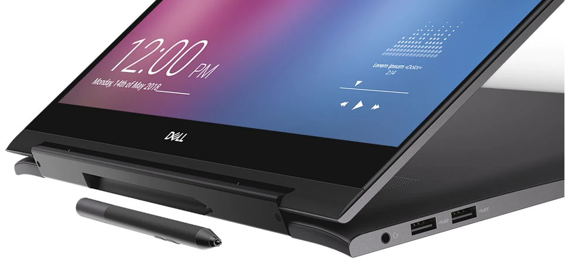
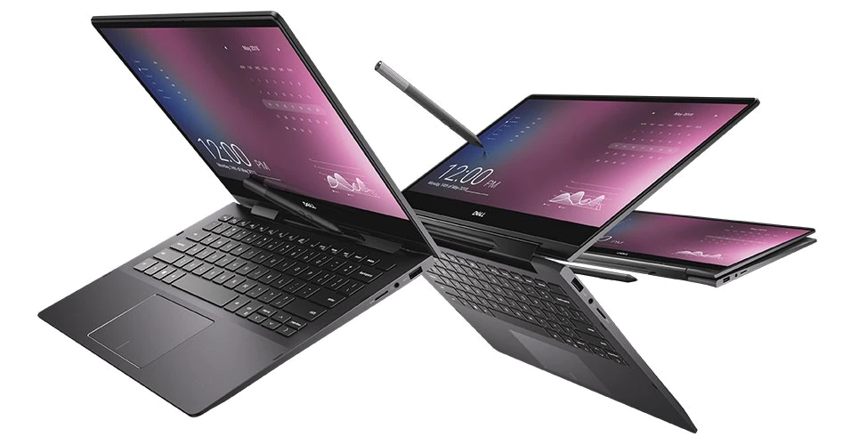

JOHN'S ELECTRONIC HUB
Dell Inspiron 13 7000 2-in-1
PRICE: NGN 317,534.26


DESCRIPTION
The Dell Inspiron 13 7000 2-in-1 Black Edition is a versatile
2-in-1 with plenty going on under the hood. Its design is premium,
and it can compete with the XPS 13. Dell’s Inspiron line of laptops
may not be its most premium family, but that hasn’t kept some of the
best features and performance hardware from showing up here. The Dell
Inspiron 13 7000 2-in-1 Black Edition (or Dell Inspiron 7390) is a
testament to that, with exclusively high-end internals,
a premium design, a 4K display, and a clever stylus slot that makes
us wonder whether they actually beat Microsoft to the idea.
Other Specifications:
- 13.3" FHD (1920x1080) Wide viewing angle, 10-point Multi-touch;
Graphics: Intel UHD Graphics; 360° flip-and-fold convertible design
-
10th Gen i5-10210U 1.60GHz (4 Cores, 6M Cache, up to 4.20 GHz)
-
8GB, LPDDR3, 2133MHz SDRAM Memory; 512GB SSD M.2 PCIe NVMe + 32GB Optane
-
Built-in fingerprint reader, RGB backlit keyboard, Intel Wi-Fi 6 AX201,
Active pen compatibility(pen sold separarately)
-
Note: This laptop does not include a built-in DVD/CD drive.
Similar Products:
-
Lenovo - 2022 - IdeaPad Flex 5i 2-in-1 Chromebook laptop
-
ASUS Chromebook Clamshell Laptop, 14" FHD NanoEdge
-
Microsoft Surface Laptop 3 - 13.5" Touch Screen - Intel Core i7
-
Lenovo Flex 5 14" 2-in-1 Touchscreen Laptop, 8-Core AMD Ryzen
-
Samsung Galaxy Book Odyssey Intel Laptop 15.6"